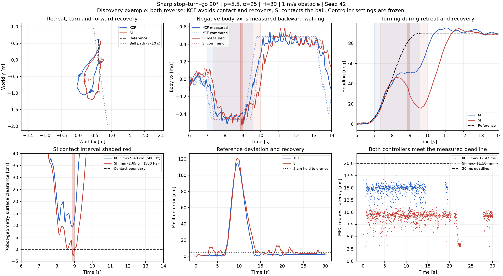
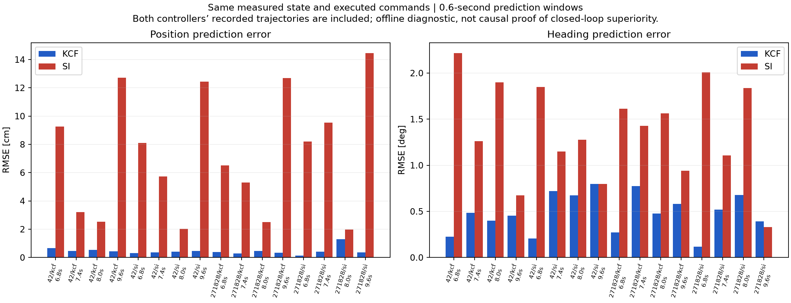

Fixed selected configuration: ρ=5.5, α=25, 30-step / 0.6-second horizon and a 20 ms planning deadline. The robot uses the 29-DoF epoch03240 KCF model. Both controllers retain their established gains and samplers; command bounds, physical initial state, reference and obstacle are matched within every pair.
The measured claim is successful coordinated avoidance and recovery in specific trials. SI also reverses and turns. This evidence does not establish that SI is incapable of these motions or isolate the learned model as the sole cause of an outcome difference. All validation outcomes below are retained, including cases where SI succeeds or tracks better.
Completed 6 paired scenarios: KCF passes task/safety/timing in 6; SI in 0. KCF avoids while SI records contact in 2 scenarios. The nominal seed-42 case was selected during tuning and is labeled discovery. The remaining scenarios test fresh seeds, fresh directions and the longer reference.
KCF's main retreat starts at 6.99 s; SI's starts at 7.33 s. KCF rotates about 50° during its main retreat, then moves forwards to recover the reference. SI records contact beginning at 8.866 s and loses substantial turn progress. KCF has 9.40 cm minimum clearance and 17.47 ms maximum request latency. Both complete the 30-second recording; SI fails the final 10-second hold within the prescribed run duration. This example is not a claim that every seed or direction produces the same advantage.

Full 1× comparison video · Focused 0.5× maneuver replay · Plots from compare_rom_data.py
Fresh-seed validation video (seed 271828) · Three-stage recorded motion storyboard
Videos replay actual recorded robot and obstacle states. Motion labels use measured body velocity and yaw rate. The clips add no new physics, and playback speed is explicitly labeled.
Both predictors were replayed from the same measured states under the same actually executed commands over 16 declared 0.6-second windows, using recordings from both controllers at seeds 42 and 271828. Median position-prediction RMSE is 0.41 cm for KCF versus 7.31 cm for SI. KCF has lower position error on 16/16 windows and lower heading error on 15/16. All windows are retained, including one with sampled physical contact. This descriptive offline check supports greater prediction fidelity during these motions. It does not isolate the cause of the closed-loop outcome difference and is not a timing measurement.

Prediction replay CSV · Replay scope, conditions and errors
| reference | seed | role | model | qualified | obstacle_contact_physics_steps | minimum_actual_gap_cm | maximum_request_ms | position_rmse_cm | heading_rmse_degrees | final_hold_seconds |
|---|---|---|---|---|---|---|---|---|---|---|
| stopgo90 | 42 | discovery | kcf | True | 0 | 9.399 | 17.47 | 33.45 | 7.157 | 15.54 |
| stopgo90 | 42 | discovery | si | False | 67 | -2.649 | 11.1 | 35.25 | 15.75 | 0.99 |
| stopgo90 | 314159 | fresh_seed | kcf | True | 0 | 0.1895 | 17.95 | 34.42 | 7.455 | 15.54 |
| stopgo90 | 314159 | fresh_seed | si | False | 0 | 23.07 | 11.55 | 25.74 | 6.138 | 9.58 |
| stopgo90 | 271828 | fresh_seed | kcf | True | 0 | 4.161 | 17.02 | 34.17 | 6.5 | 15.54 |
| stopgo90 | 271828 | fresh_seed | si | False | 88 | -2.421 | 12 | 28.75 | 1.941 | 8.72 |
| stopgo90_cross_a | 314159 | fresh_direction | kcf | True | 0 | 25.99 | 16.95 | 26.8 | 1.926 | 15.54 |
| stopgo90_cross_a | 314159 | fresh_direction | si | False | 0 | 26.06 | 11.85 | 31.83 | 2.944 | 6.49 |
| stopgo90_cross_b | 314159 | fresh_direction | kcf | True | 0 | 22.18 | 17.11 | 27.72 | 2.353 | 15.54 |
| stopgo90_cross_b | 314159 | fresh_direction | si | False | 0 | 15.87 | 11.62 | 33.85 | 3.64 | 2.12 |
| stop_turn_go | 42 | longer_reference | kcf | True | 0 | 5.106 | 17.41 | 24.55 | 6.023 | 12.01 |
| stop_turn_go | 42 | longer_reference | si | False | 0 | 1.021 | 12.27 | 20.29 | 8.186 | 0.37 |
A pass requires a full upright run, zero obstacle contacts, positive physical robot-geometry clearance, completed terminal hold and no 20 ms deadline or handover failures. Margins below 3 cm are accepted per the user's instruction. A small positive clearance in one run is not a robustness guarantee.
Metrics CSV · Measured maneuver intervals · Discovery motion data · Exact frozen settings and test plan · Results and scope
The earlier figure-eight tracking loss at this α/ρ is retained as an accepted tradeoff; this study focuses on stop–turn–go maneuvers and makes no all-trajectory superiority claim.